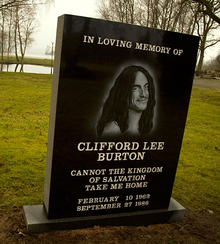

Třetí album Metallicy, Master of Puppets, bylo taktéž nahráno ve studiu Sweet Silence a bylo vydáno v březnu 1986. Na albu pracovali od léta 1985, natáčení trvalo od 2. září do 27. prosince, v lednu pak bylo album mixováno. Album dosáhlo 29. příčky v Billboardu 200 a vydrželo tam 72 týdnů. Album Master of Puppets bylo první, které Metallice získalo zlaté album, a to 4. listopadu 1986 a poté roku 2003 bylo šestkrát označeno za platinové. Steve Huey z Allmusic označil album za „největší úspěch skupiny“. Titulní skladba pojednává o kokainu, jenž byl v té době velmi oblíbený. Po vydání alba se Metallica spolu s Ozzym Osbournem vydala na turné po celých Spojených státech amerických. Hetfield si při něm zlomil zápěstí a proto pouze zpíval (na kytaru za něho hrál John Marshall).
 Poslední píseň, kterou Cliff Burton s Metallicou hrál, byla Fight Fire with Fire dne 26. září 1986 na koncertě v Solnahallenu v Solně u Stockholmu,[8] když byla kapela na evropské části turné Damage, Inc. Tour.[9] Ráno 27. září 1986 jela skupina autobusem ze Stockholmu do Kodaně. U Dörarpu ve Švédsku však řidič autobusu ztratil kontrolu nad vozem a dostal smyk, což poté způsobilo převrácení autobusu. Hetfield měl několik odřenin, Ulrich si zlomil prst u nohy, Hammett byl na chvíli v bezvědomí a krátce neviděl na jedno oko. Burton byl při smyku vyhozen z horního lůžka oknem a autobus se na něho záhy převrátil. Byl na místě mrtvý. Kirk mohl mluvit o štěstí, jelikož lůžko, na kterém Burton ležel, bylo původně jeho. Pohřeb se konal 7. října v San Francisku. Cliffovi na rozloučenou hrála jeho skladba „Orion“. Burtonova smrt nechala budoucnost skupiny v nejistotě. Zbývající členové se rozhodli, že by Burton chtěl, aby pokračovali a s požehnáním Burtonovy rodiny hledali náhradu.[10]
Zhruba čtyřicet lidí zkoušelo získat místo baskytaristy, včetně Lese Claypoola ze skupiny Primus, Troye Gregoryho ze skupiny Prong a frontmana kapely Flotsam and Jetsam, Jasona Newsteda. Newsted se naučil úplně všechny skladby a po konkurzu ho skupina pozvala do klubu Tommy's Joynt v San Franciscu. Hetfield, Ulrich a Hammett se rozhodli, že Newsted je ten pravý, kdo má nahradit Burtona. První vystoupení s Newstedem bylo v Country Clubu v Resedě v Los Angeles.
Potom, co se Newsted přidal ke skupině, skupina dokončila na začátku roku 1987 turné. V březnu 1987 si Hetfield podruhé zlomil zápěstí. V létě 1987 se kapela „zašila“ v garáži Larse v East Bay v San Franciscu, kde začaly zkoušky, na kterých hráli coververze skupin NWOBHM. V červenci se Metallica vrátila do studia A.M. Conway v Los Angeles, kde nahráli některé skladby z garážových zkoušek. Za šest dnů z toho vzešlo minialbum The $5.98 E.P. Garage Days Re-Revisited. Album bylo nahráno, jako zkouška nově sestaveného studia, zkouška pro Newsteda a zmírnění smutku a stresu po smrti Burtona. 21. srpna byla premiéra této desky, která ale od roku 1989 už nebyla běžně v prodeji (znovu vyšla jako bonus pozdější desky Garage Inc. v roce 1998). Video nazvané Cliff 'Em All bylo vydáno v roce 1987, aby připomínalo tři roky Burtona v Metallice. Video se skládá z basových sól, domácích videí a fotek.